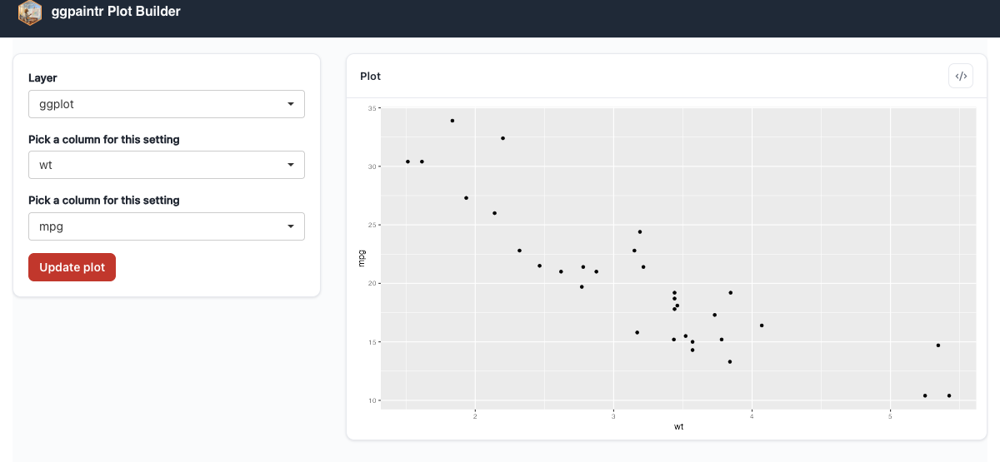

ptr_app(
"ggplot(mtcars, aes(ppVar('wt'), ppVar('mpg'))) + geom_point()",
css = "my-theme.css"
)14 Customization
This chapter covers the user-facing customization surface: where boot-state defaults live, and how to restyle the default shell with CSS. The deeper levers each have their own chapter — rewriting every label and copy string is Chapter 16, packaging a styled shell as a reusable function is Chapter 15, and adding new widget types is Chapter 6.
14.1 Boot state belongs in the formula
Older ggpaintr exposed a per-call checkbox_defaults = argument (and a global checkbox_default_all_other_layer option) to start layers unchecked. Both are gone: the formula-side keywords ppLayerOff() and ppVerbSwitch() (Chapter 4) carry that information inside the chart text itself, so the source of truth for “what starts off?” is the same string you wrote the chart against. If you are migrating old code, three mechanical conversions cover every prior use:
- Direct entries — start one named layer off:
# Old
ptr_app("ggplot(mtcars, aes(x = ppVar, y = ppVar)) + geom_point() + geom_smooth()",
checkbox_defaults = list(geom_smooth = FALSE))
# New
ptr_app("ggplot(mtcars, aes(x = ppVar, y = ppVar)) + geom_point() + ppLayerOff(geom_smooth(), TRUE)")- Duplicate-group expansion — a vector at a bare base name used to address every same-name instance; now wrap exactly the instance you mean:
# Old (apply c(TRUE, FALSE) across two geom_point() layers)
ptr_app("ggplot(...) + geom_point() + geom_point()",
checkbox_defaults = list(geom_point = c(TRUE, FALSE)))
# New
ptr_app("ggplot(...) + geom_point() + ppLayerOff(geom_point(), TRUE)")- Opt-in mode — code that relied on the removed global option wraps every should-start-off layer in
ppLayerOff(..., TRUE)explicitly.
Per-run overrides of these defaults go through spec = (Chapter 4).
14.2 Styling with CSS
ggpaintr ships a bundled stylesheet and a BEM-style class vocabulary under the ptr- prefix. Two surfaces, in order of invasiveness.
14.2.1 Surface 1 — class hooks ggpaintr already emits
Every region of the default shell carries a class you can target from your own CSS. These classes are the practical styling hook today, but the package does not document them as a stability contract — the documented theming surface is the --ptr-* CSS custom-property tokens on .ptr-app. Pin your ggpaintr version if a theme leans on the class names:
| Region | Block | Notable elements |
|---|---|---|
| Outer shell | .ptr-app |
.ptr-app__header, .ptr-app__mark, .ptr-app__title |
| Plot card | .ptr-card |
.ptr-card--plot, .ptr-card__head, .ptr-card__title, .ptr-card__body |
| Output area | .ptr-output |
— |
| Generated-code window | .ptr-code-window |
.ptr-code-window__head, .ptr-code-window__title, .ptr-code-window__actions, .ptr-code-window__close, .ptr-code-window__body, .ptr-copy-btn, .ptr-code-toggle, .ptr-icon-btn |
| Shared-controls panel | .ptr-shared-panel |
.ptr-shared-panel__title, .ptr-shared-panel__help, .ptr-shared-panel__tip |
| Pipeline stage rows | .ptr-stage |
.ptr-stage-head, .ptr-stage-fields, .ptr-stage-row |
| Inline errors | .ptr-alert |
.ptr-alert--error, .ptr-alert__detail |
14.2.2 Surface 2 — injecting your own stylesheet with css =
Every self-contained entry point (ptr_app(), ptr_ui(), ptr_shared_panel()) accepts a css = argument — as does the optional L3 page shell ptr_ui_page(), and the ptr_ui_assets(css = ) escape hatch for roots that bypass ptr_ui_page() (Chapter 12). It takes a character vector of paths to .css files; each is registered as a static resource and linked after the bundled stylesheet, so your rules win at equal specificity. Relative url(...) references resolve against each file’s own directory, so images can ship next to the stylesheet.
A minimal theme that recolours the title bar and tightens the card padding:
/* my-theme.css */
.ptr-app__header { background: #1f2937; color: #f9fafb; }
.ptr-app__title { font-family: "Inter", sans-serif; letter-spacing: -0.01em; }
.ptr-card__body { padding: 0.5rem 0.75rem; }
my-theme.css injected: dark header, tightened plot card. Everything else is the bundled stylesheet.css = validates each path at construction time — missing files and non-.css extensions abort with a clear message, so typos surface before the first browser load.
14.2.3 What is not stable surface
- Internal markup details — element order, nesting depth, descendant tag names — may change between releases even when class names stay. Style by class, not by structural selectors like
.ptr-card > div:nth-child(2). - Classes emitted by upstream Shiny, shinyWidgets, and bslib (
.shiny-input-container,.selectize-control,.form-control, …) belong to those packages; their stability is governed there. - Anything matching
ptr_with an underscore is an id (Shiny input/output id), not a class; styling against ids is possible but brittle, since ids are namespaced by host modules (Chapter 11).
14.3 Beyond CSS
If you find yourself passing the same css = and ui_text = to every app, package the combination as a wrapper function — that recipe, including how wrappers compose, is Chapter 15.